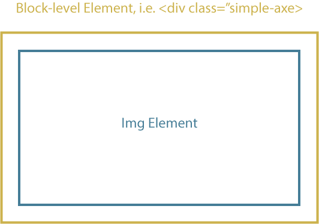

Simple Axe
A simple javascript parallax effect.
Include simple-axe.js in your footer then add a class of "simple-axe" to a block element containing a single image that you would like to parallax.
A simple javascript parallax effect.
Include simple-axe.js in your footer then add a class of "simple-axe" to a block element containing a single image that you would like to parallax.
Images need to be optimized with a ratio (16:9) that makes them parallax friendly. The focal point of the image should be near the center of the image.
